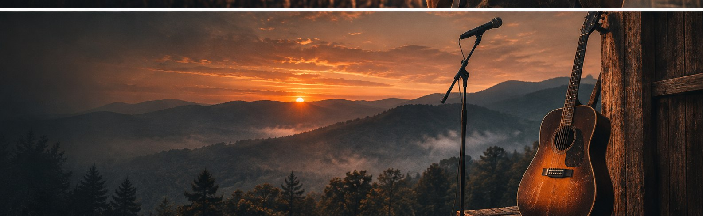

THE PLAYLIST
NINE SONGS.
ONE SOUND.
Every fan has a different favorite. These tracks are a mix of big hits and memorable album cuts that show different sides of his music.

- 01
Last Night
A stripped-back sound with a chorus that reached far beyond country radio.
- 02
Whiskey Glasses
One of the early hits that helped introduce Wallen to a wider audience.
- 03
Wasted on You
A song that mixes country songwriting with a modern beat.
- 04
Chasin’ You
A nostalgic song about memories that are hard to leave behind.
- 05
Sand in My Boots
A reflective, beach-trip story built around a piano-led melody.
- 06
You Proof
An upbeat track with a catchy hook about trying to move on.
- 07
Thinkin’ Bout Me
A confident, rhythm-driven track from the 2023 album.
- 08
More Than My Hometown
A song about having to choose between love and the place you call home.
- 09
I’m the Problem
The title track from Wallen’s fourth studio album.